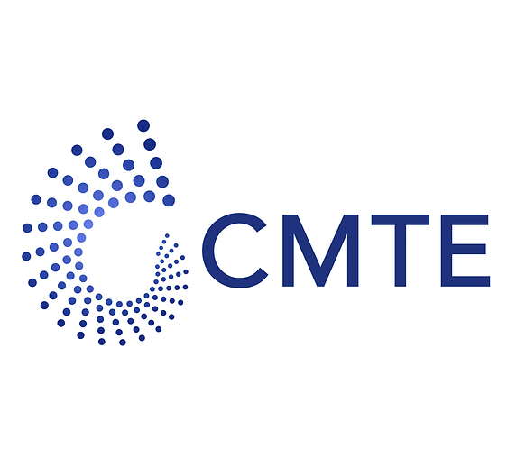
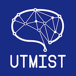

Data Scientist | Machine Learning Engineer | AI Specialist
My name is Armaan Lalani and I am current Data Scientist at Visa Consulting & Analytics. I recently graduated from the Master of Management Analytics program at the Rotman School of Management and had the privilege of being recognized as a Vector Scholar in AI for the 2024-2025 academic year. I previously worked as a Data Scientist at Overbond and graduated from Engineering Science at the University of Toronto with a Machine Intelligence Major combined with an Engineering Business Certificate in 2023. I am extremely passionate about machine learning and data science and am seeking to gain meaningful experience in the field through my formal education, external projects, and employment experience. Feel free to visit my LinkedIn or Github to learn more about me or navigate to the other sections of my page.
Education
The MMA Program at Rotman is recognized by the Vector Institute of AI for delivering a curriculum that equips graduates with skills required to succeed in AI related roles. I pursued the MMA program to enhance the AI and ML experience I gained as an Engineering Science graduate and employment experience.
Master of Management Analytics
August 2024 - July 2025
Engineering Science - Machine Intelligence Fourth Year
September 2022 - April 2023
Engineering Science - Machine Intelligence Third Year
September 2020 - April 2021
Engineering Science - First and Second Year
September 2018 - April 2020
×
Some text in the Modal..
Experience
Data Scientist at Visa (Visa Consulting & Analytics)
July 2025 - Present
Data Scientist at Stathletes
January 2025 - June 2025
ML Research Assistant at Rotman FinHub
January 2025 - May 2025
Data Scientist at Overbond
February 2023 - July 2024
I started working part time at Overbond during the final two months of my undergraduate degree and transitioned to a full time role in May 2023. As a Data Scientist, I was involved in two major projects: Smart Order Routing (SOR) and Layer2 Bond Pricing.
I was the lead owner and developer of the new SOR product part of Overbond's suite. The goal of SOR is to provide algorithmic and aggregated fixed income trading routes in order to minimize transaction costs. Fixed income trading typically involves four major trading venues: Over the Counter (OTC), Request for Quote (RFQ), All to All, and Direct Channels. Typically, traders are required to check various venues and channels in order to find the best path to execution, an issue that SOR aims to solve. OTC and RFQ prices are predicted using trained machine learning models along with associated quantities using developed dealer inventory and market capacity analytics using Transaction Cost Analysis (TCA). After gathering associated prices, venues, and available dealers, a linear program aims to solve the best path to execution using the available sources.
I was also a developer for Overbond's Layer2 Bond Pricing Model. The goal of Layer2 is to provide live RFQ pricing analytics for clients in order to minimize transaction costs while also winning the RFQ auction. The Layer2 model is a boosting algorithm that utilizes decision trees to generate predicted prices for bonds using bond level analytics, issuer level analytics, and sector level analytics. As a developer, I was responsible for conducting backtests for clients, which involved training individual models for clients using their historical RFQ data. I was responsible for all stages in the data pipeline: exploratory data analytsis, data cleansing, model training, model output analysis, and presentation of results.
Data Science Consultant at Center for Management of Technology and Entrepreneurship

September 2022 - April 2023
My fourth year thesis was completed at U of T's Center for Management of Technology and Entrepreneurship at a financial institution (The Bank), which cannot be disclosed due to an NDA. The rise of deepfake technology in recent years has underscored the importance of distinguishing between authentic and synthetic content. For established financial institutions such as The Bank, ensuring security and confidentiality for clients and themselves is a top priority. However, voiceprint technology, which relies on vocal features to authenticate clients over the phone, is vulnerable to synthesized speech. The Bank acknowledges the potential risks posed by synthetic speech and recognizes the need to identify effective mitigation techniques to safeguard security. To this end, the present study aims to compare the performance of handcrafted and deep feature-based methods of synthetic speech detection across several key evaluation metrics, including accuracy, equal error rate, processing time, and trainable parameters. Two models were developed and tested, and the results indicate that the deep features model outperforms the handcrafted features model on three of the four metrics, suggesting that it should be prioritized for implementation. Click the link below to view my final thesis report.
Machine Learning Consultant at Perimeter Medical Imaging AI
September 2022 - December 2022
My fourth year Engineering Capstone project was completed in collaboration with Perimeter Medical Imaging. Perimeter is an AI company that uses deep learning models to help surgeons determine whether cancer tissue is successfully remove during breast conserving surgery. The primary problem presented by PerimeterMed was the timeframe required to conduct a margin assessment. The margin assessment is a process used to determine whether or not the surgeon was successful in removing the tumor during BCS utilizing OCT images. Conducting an accurate margin assessment requires the use of denoised OCT images, which was accomplished by using two signals to reduce noise, taking approximately two to three minutes. This timeframe was problematic for two primary reasons: the first being a reduction of throughput in the number of patients a surgeon is able to see and the second being potentially keeping patients under unnecessary sedation during the margin assessment if the assessment reveals no malignant tissue. As a result, the solution to this problem involved the use of a deep learning model to reduce the levels of noise in individual signals, thus reducing the total amount of time needed to conduct a margin assessment. The link to the report for our Capstone project can be found below.
CMG Investment Co-op for Total Fund Completion Portfolio Strategies (Quant) at OPTrust
May 2021 - July 2022
I had the tremendous opportunity to work at OPTrust during my Professional Experience Year (PEY) as a CMG Investment Co-op on the TFCPS team. My role and team was heavily focused on making strong data driven investment decisions using a variety of techniques from the fields of data science and machine learning. A few of my most meaningful projects included building an equity regime detection model, a bootstrapping model to analyze the performance of various risk mitigants against the S&P, and a neural network to predict the price of movements of various future rolls.
The equity regime detection model consisted of two parts: the first was utilizing L1 trend filtering to numerically identify historical periods of growth and decline in equity and secondly, training a random forest model of several macroeconomic indicators to predict regime switches. The model performed well out of sample, and was able to predict the switch of regimes during the Global Financial Crisis as well as COVID. The model will continue to be used in production for Severe Market Decline and Systematic Risk Allocation. The bootstrapping model I built was used to test the effectiveness of various risk mitigating strategies against the S&P. The model samples historical returns to create a simulated path environment for a specified amount of time. It then introduces a risk mitigant (gold, bonds, currencies, etc.) or a particular strategy (trend, options, etc.) to attempt to reduce the VAR95 of the original portfolio by a certain percentage. This model is now currently being used by the investment division to test the effectiveness of various strategies. Lastly, I also built a convolutional neural network to predict price movements of futures rolls. I was responsible for creating the entire data pipeline, consisting of extracting the appropriate roll tickers based on the roll schedule, querying Bloomberg for price, volume, open interest, and commitment of trader’s data, and performing data preprocessing to ensure it could be passed through a model. The model did not perform as well as expected, however, the project provided me with important information regarding the process of rolling futures and the various capabilities offered by the Bloomberg terminal.
Finally, I also worked on a number of reporting projects during my time at OPTrust. Some of these included generating and sending out reports daily on FX Exposure and P&L, analyzing model slippage of Risk Reduced Equities using intraday data, and generating reporting emails for various fund portfolios.
Project Developer at University of Toronto Machine Intelligence Student Team (UTMIST)

July 2020 - May 2022
During the 2021-2022 academic year, I worked as a Project Developer for UTMIST. The project my team and I worked on was developing an image to text converter in Python and I was specifically tasked with implementing the sentence to word segmentation feature. By utilizing the IAM Dataset, I was able to generate a dataloader class which consisted of various examples of handwritten lines along with the bounding boxes associated with each individual word. By utilizing resnet architecture, I was able to reconstruct an existing model to train. During the training process, the model was not able to converge to locating the ground truth bounding boxes, and as a result, we proceeded to use a pretrained model. The pretrained model was able to locate the bounding boxes accurately on the dataloader class that was built and was used in the final pipeline. For more information visit the UTMIST website.
IT Analyst at Coreio Inc and Manulife - North American Service Desk
March 2020 - June 2020
My experience as an information technology support analyst at Coreio entailed providing quality support to Manulife employees with various issues they may have faced including: system access, application access, and connectivity issues. The position would often require me to remote into employee's computers due to COVID-19 and troubleshoot from my laptop to assist the user with issues regarding Manulife account access, mainframe access, VPN connectivity, and dual monitor setup. This opportunity enhanced my skills in:
Problem Analysis
Issues brought forth by employees can often be complicated with various steps and taught me the importance of devising a strategy to solve them based on previous calls and information
Quality Assurance
Employees could sometimes be frustrated if they experienced the same technical issues continuously and often required very thorough support in order to minimize the chance of future problems
Collaboration
Many Coreio employees were new to assisting Manulife employees and demanded a high level of communication and collaboration within the team in order to provide support
Business Architecture Intern at TD Bank
April 2019 - August 2019
My experience as a Business Architecture Intern for the North American Contact Centre (NACC) for TD Bank entailed developing a detailed roadmap for capabilities related to call centre agents, the TD app and website, and TD Clari. I had the opportunity to develop an active database of the current capabilities being developed as well as information relating to projects expected to be undertaken in the future. Additionally, I focused in on application alerts and performed a thorough current state analysis, future state analysis, and roadmap which was then presented to various vice presidents of NACC. Lastly, I also had the opportunity to work within a group of interns to devise improvements to the intern experience which was presented to TD's talent acquisition team. This opportunity enhanced my skills in:
Data Analysis
A very large part of the position involved analyzing data related to customer agent interactions and making informed decisions based on conclusions drawn from the data
Presentation Delivery
This position entailed a number of small and large scale projects which were later presented to senior management for approval and feedback
projects
Music Genre Predictor
Winter 2020
The course Introduction to Machine Intelligence provided me with the opportunity to collaborate with a peer on designing a project of our choice. My team member and I decided to pursue a project on predicting the genre of music using mel-spectrograms.
Data Collection: The data collection process consisted of us collecting 30 second samples of various songs belonging to 7 genres of music. This was done using the Spotify API, the package youtube_dl, and a script that collected a random 30 second sample of the mp3 files. Following this, we utilized the library librosa to convert each 30 second sample into a mel-spectrogram (essentially an image representation of a music file in the frequency domain) which would then be passed through a neural network for training.
Model Architecture: I lead the effort to design the models used for training, which consisted of a baseline CNN model, a more advanced CNN model, and finally a CRNN (Convolutional Recurrent Neural Network) model. Based on hyperparameter optimization, we were able to acheieve a test accuracy of roughly 79% compared to just 14% of guessing considering there were 7 music genres used. Visit the links below to review our project report and code.
3D Reconstruction
Winter 2020
The course Introduction to Image Analysis provided me with the opportunity to collaborate with two peers on reconstructing a 3D model from various 2D images. There was flexibility on how we chose to tackle this problem, and we originally researched using neural networks. However, there were various issues with this method including lack of an appropriate dataset containing both 2D images and 3D models and ground truth approximations using voxels would have been extremely difficult.
As a result, our team pivoted to implementing reconstruction using stereo vision. This was done by applying various techniques including image rectification, developing disparity maps, utilizing epipoles, generating depth maps, and several others. This was done as a result of utilizing OpenCV functions as well as developing some of our own to assist with debugging. While the end result was not the most accurate, the project provided me with the opportuntiy to consolidate various techniques learned throughout the semester and enhanced my ability in utilizing OpenCV. Visit the links below to view our project report and code.
Praxis III
Winter 2020
The basis of this course consisted of designing an autonomous robot, rover, etc. that could successfully deliver a charger to an electric car. The design had to follow certain restraints pertaining to setup, size restrictions, and power restrictions, however there was room for creativity in tackling this challenge. My team designed a rover that was capable of moving along the floor while also making use of a lead screw to provide motion in the z direction needed to reach charging ports of various heights.
I was responsible for implementing Arduino code to allow for our robot to interact with its surroundings as well as design the primary layout of our robot prior to building it using CAD through Fusion. During the course of the project, I also assisted extensively in the construction of the rover as well as the electrical circuitry using a protoboard.
The videos below display our rover successfully delivering charge to a port. Additional pictures and components of the rover can be found in the slideshow above.
U of T Biomedical Engineering Competition
Winter 2019
I competed in the U of T Biomedical Engineering Competition with a group of three other students in Engineering Science. In 2019, the competition called for participants to design a solution to improve the quality of life of children suffering from Congenital Insensitivity to Pain with Anhidrosis (CIPA) which is an extremely rare condition preventing the sensation of pain and temperature. This can often lead to children harming themselves unknowlingly leading to early deaths. The competition consisted of a conducting research and developing a presentation about the proposed solution and first presenting it to the competition coordinators followed by industry experts.
My team and I recognized from the beginning that several teams would attempt to implement monitoring systems to prevent children from interacting with anything that could be potentially dangerous if their parents are not around. My team and I decided to take a different approach by completing extensive research around Liquid Crystalline Elastomers (LCEs). LCEs are biomaterials that can change form base on temperature. My team and I decided to use these materials to build LCE utensils which would change form if a particular food was either too hot or too cold. For example, if a child with CIPA places their spoon in soup that would burn their palates, the spoon after being exposed to this liquid would change shape making it effectively unusable and preventing the child from consuming the soup. Visit the link below for more information on the project.
Praxis II
Winter 2019
The projects completed during Praxis II were extremely rigorous and focused primarily on the engineering design process. The first half of the course involved reaching out to a particular community and recognizing an opportunity to utilize the engineering design process to positively impact some aspect of that community. Within a group of four, we visited Out of the Cold, an initiative that allows homeless people to spend a night at a local church during winter months. My team and I had the opportunity to perform a site visit while interacting with many of the staff and residents to gain a better understanding of their operations. Following a site visit and extensive research, my team and I wrote a Request for Proposal centered around security and comfort for temporary residents of the churches.
The second half of the course involved targetting a specific RFP chosen by course instructors. My team and I chose to look into the issue of collecting shuttlecocks at a local badminton club after individual drills. The process of picking up all the shuttlecocks by hand is extremely time consuming and often limits practice time of members of the club. Keeping this issue in mind as well as the various restraints set out in the RFP, my team and I decided to create a machine that would be pushed along the ground and gather shuttlecocks as it moved. This design decision was supported by research and a site visit and was eventually presented to course instructors and TA's.
The construction of our mechanism assisted me in developing a number of important skills including:
Mechanical Design
The entire mechanism was built using mainly wood and glue. The design required a very high degree of precision as it needed to travel seamlessly on the ground which was acheived using laser cuts and CAD.
CAD
Working on this project first exposed me to CAD and 3D printing which were extremely beneficial skills for projects to follow.
contact
Feel free to contact me if you have any questions about my experience or want to learn more.